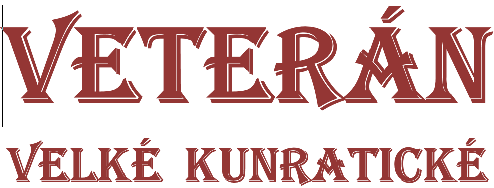
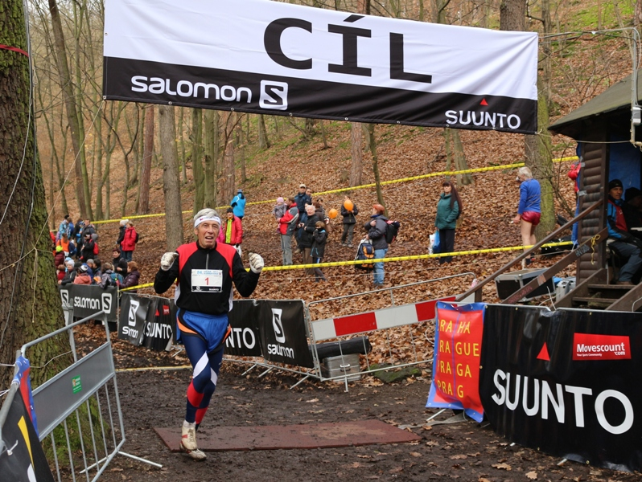
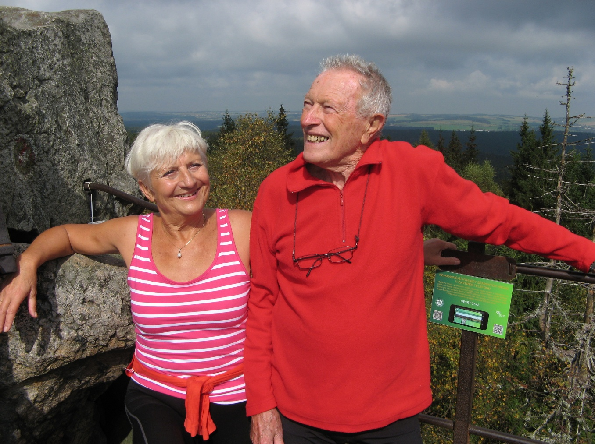
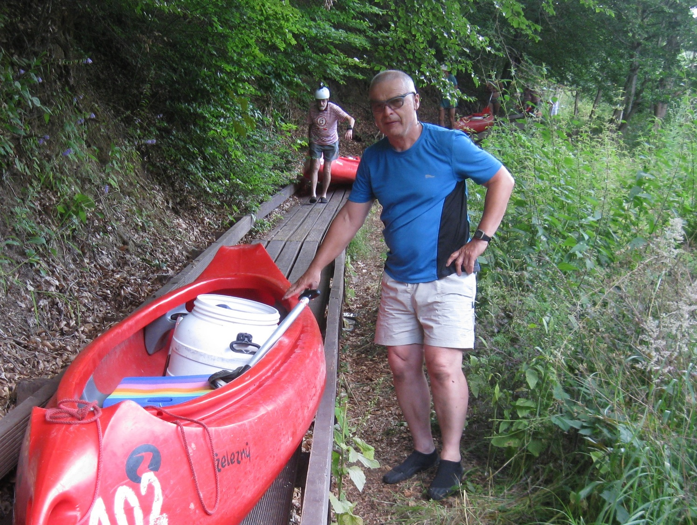

Časopis určený veteránkám,
veteránům a všem příznivcům
legendárního závodu
Číslo: 2
květen 2022
Milí přátelé,
když jsme v listopadu roku 2020 vydali první číslo „Veterána Velké kunratické“, předpokládali jsme, že v dalších číslech se budeme především věnovat historii Velké kunratické a postupně budeme pokračovat v naší snaze o zmapování dávných i méně dávných ročníků. Jak šel čas, ukázalo se bohužel, že tuto prvotní představu budeme muset přehodnotit. Jednak jsme v loňském roce v „době covidové“, kdy se neuskutečnilo naše tradiční jarní setkání, slíbené druhé číslo nevydali, a poté, naléhavěji než v jiných letech, dal o sobě vědět neúprosný čas, který odměřuje naše roky, dny a hodiny na tomto světě. Odešla celá řada našich kamarádů veteránů, včetně těch, bez nichž jsme si ještě nedávno nedokázali Velkou kunratickou představit.
V první řadě to byl Pavel Frček, neúnavný organizátor a statistik nejen Velké kunratické, mezinárodní rozhodčí, celoživotní všestranný sportovec. Ve Velké kunratické nasbíral 42 startů a byl vůdčí postavou veteránské kategorie po dobu téměř padesáti let, konkrétně od roku 1974, kdy převzal funkci statistika po zesnulém Janu Vondřejcovi. Zemřel dne 30.7.2021 ve věku nedožitých 85 let. V závěru jednoho ze svých posledních společných mailů napsal: „Prosím, abyste všechnu korespondenci (omluvy, obnovy účasti, dotazy atd.) zasílali nejen mně, ale též na adresu j.bouse@volny.cz. Je to můj nový spolupracovník a chceme dělat vše duplicitně.“ Kdo mohl tušit, jak brzy tato výzva nabude na významu.
Pouhé dva dny před 88. Velkou kunratickou, dne 12. listopadu 2021 nás navždy opustil Karel Matzner. Byl úspěšným veteránem Velké kunratické (rovněž 42 startů), kde dokázal vyhrávat kombinované hodnocení, ale též mnohonásobným medailistou z mistrovství světa a Evropy, mistrem světa na dráze, v hale i na silnici v disciplínách od 400 metrů až po půlmaraton. Do tohoto čísla byl připraven rozhovor (proveden korespondenční formou), který si Karel Matzner už nepřečte. Přesto jej zařazujeme jako vzpomínku na tuto legendu veteránského sportu, nejen Velké kunratické.
Z mailů Jindřicha Boušeho víte o dalších úmrtích v našich řadách. Zaslouží si být jmenováni, věnujte jim, prosím, svou vzpomínku. Od loňského listopadu nás opustili: Oldřich Stehlík (1948, 48 startů), Milan Jílek (1937, 40 startů; olympionik z roku 1960 a vítěz VK z téhož roku), Jiří Liška (78 let, 42 startů), Zdeněk Málek (78 let, 34 startů), Martin Novotný (75 let, 55 startů), Antonín Jankovský (79 let, 51 startů). Bohužel neznám všechny vysokoškolské tituly jmenovaných, proto je zde záměrně neuvádím. LS
Josef Vonášek – absolutní rekord v počtu startů: 62!
Mám velkou radost, že vedle smutných zpráv, zmíněných na první straně, můžeme uvést i jednu mimořádně radostnou: Pepa Vonášek (nar. 16. 7. 1937) ve svých 84 letech proběhl slavnou trať Velké kunratické podvaašedesáté a osamostatnil se na prvním místě v počtu absolvovaných startů. Právem mu patří velký obdiv a obrovská gratulace! Pokládám si za velkou čest, že nový rekordman odpověděl redakci Veterána VK na následující otázky.

FOTO: Jana Zemanová (dcera J. V.)
1/ Prozraď v několika větách něco o sobě: odkud jsi, kde žiješ, co rodina, kde jsi pracoval (pracuješ) a čím se v životě zabýváš, kdy a jak ses dostal ke sportu.
Jsem rodilý Pražák. Na konci války jsem, jako osmiletý, pomáhal stavět barikádu na Pankráci. Moje tři děti (dnes už také veteráni) atletiku dělají, nebo dělaly. Celý život jsem pracoval manuálně v těžkých profesích, takže na kvalitnější trénink už nezbývaly síly. Posledních 15 let jsem stavěl výtahy. Jeden z nich byl i pro tehdejšího prezidenta Václava Havla na Rašínově nábřeží (za Tančícím domem).
Mým koníčkem je tak trochu muzika. Téměř 40 let jsem hrál v kapele a právě okupace v roce 1968 mě zastihla na mezinárodním táboře mládeže ve Starém Smokovci, kde jsme s kapelou hráli. 21. srpna jsme museli skončit, ale byl velký problém dostat se odtamtud domů.
V mládí jsem často chodil s mými vrstevníky hrát odbíjenou, pak jsme si udělali doskočiště, já měl kouli, koupili jsme si disk, vyrobili oštěp a pořádali různé víceboje. Když už jsem si myslel, že „něco umím“, tak jsem se přihlásil do atletického oddílu na Vinohrady. Jaké ale bylo rozčarování, když jsem na svých prvních závodech skončil beznadějně poslední. Tehdy to byly halové závody v koňské jízdárně v Houštce. Běžela se tam pětistovka na pilinové dráze pro koně. Mým prvním trenérem se stal Jiří Nezbeda a já začínal jako štrekař. Po vojně, kde jsem trénovat nemohl, jsem přešel na skoky a později i na víceboje. A tak je to i dosud.
2/ Kam až jsi to ve sportu dotáhl a co považuješ za své největší sportovní úspěchy, případně kterých svých výkonů si nejvíce ceníš – v mládí a nyní?
Na závodní úrovni dělám atletiku již 66. rokem a po celou tuto dobu za Bohemians Praha. Tak bych mohl bilancovat. V mládí jsem však bral atletiku jen jako svého koníčka a moje výkony tomu také odpovídaly. V tamním oddíle (tehdy se jmenoval Spartak Stalingrad) jsem se pohyboval na úrovni opory našeho „B“ družstva. Karta se začala obracet až vstupem do veteránského věku ve čtyřiceti letech. Začal jsem se zúčastňovat veteránských závodů ve světě a Evropě a mám odtud zatím 37 medailí. Chtěl bych se zde zmínit alespoň o dvou, pro mě nezapomenutelných mítincích.
Byl jsem čerstvě v kategorii M 75 a těšil jsem se na ni. Psal se rok 2012 a ME veteránů se konalo v německé Žitavě. Tam jsem nejdříve vybojoval stříbrnou medaili v desetiboji (a že Němci mají dobré závodníky) a hned druhý den ráno po desetiboji jsem závodil v dálce (tady to bylo, už v únavě, jen 4. místo). Následovala výška s bronzovou medailí a po krátkém odpočinku přišel na řadu trojskok. Tady se však na startu sešlo hned pět mistrů světa! Na medaili bylo potřeba tři z nich porazit. A povedlo se. Čtyřikrát jsem vylepšil český veteránský rekord pětasedmdesátníků a získal další bronz. Všechno to byly ale velice těžké závody a nejvíce mě hřálo to, že jsem v nich obstál se ctí.
A pak ještě o pět let později, ale pořád ještě v kategorii M 75. Byl jsem tam jedním z nejstarších a v těchto letech je proti mladším už každý rok znát. Byly to Světové veteránské hry v Aucklandu na Novém Zélandu. Během týdne jsem tam získal 6 medailí! Tři zlaté za vítězství v dálce, trojskoku a desetiboji, dvě stříbra za výšku a 300 m překážek a bronz za hod oštěpem. Vracel jsem se domů jako nejúspěšnější závodník z naší české výpravy. Jen atletů tam startovalo 2800! Velmi si také cením toho, že jsem byl v mém mateřském oddíle TJ Bohemians Praha vyhlášen nejlepším atletem již 19x!
3/ Co pro tebe znamená Velká kunratická?
Beru ji jako prověrku fyzické přípravy. Jen je pro mne smůla, že se běhá právě v době, kdy končí sezona na dráze a po malé přestávce začíná sezona halová. Takže jí běhám každý rok naprosto bez přípravy, na kterou už mi nezbývá čas, neboť září a říjen je nabitý různými víceboji, kterých se zúčastňuji a musím se na ně připravovat. Zatím jich mám absolvováno 188.
4/ Kdy jsi běžel svou první Velkou kunratickou a jaké máš na ni vzpomínky?
Deset dnů po návratu z vojny jsem si zaběhl v roce 1959 svoji první Velkou kunratickou. Tehdy jsem vůbec nevěděl, co mě na trati čeká. Na Hrádek jsem sice „vyspěchal“, ale nahoře jsem nebyl schopen ani jít, a tak všichni, které jsem do kopce předbíhal, mně to nahoře zase vrátili. Byla to ale dobrá zkušenost a poučení pro další ročníky.
5/ Připomeneš si nějaký ročník, který ti utkvěl nejvíc v paměti? Čím především?
Na jednom z mých prvních startů při seběhu do cíle najednou slyším za sebou zvonek. Byl to známý cyklista Cihlář, který mě předjížděl na kole. Tehdy tam startovalo i pár cyklistů.
6/ Je obdivuhodné, jak jsi ve svém věku stále aktivní a dokonce ještě závodíš. Prozraď svůj recept, jakou máš životosprávu, jak trénuješ a jak se připravuješ na závody.
Žádný recept nemám. Životospráva bohužel mizerná. Kromě tréninků (4 – 5x týdně) si cvičím ještě někdy tak 15 minut doma. Většinu nedůležitých závodů absolvuji z plného tréninku, jen na ty velké odpočívám. Snažím se být stále v pohybu.
7/ Jaké máš před sebou další výzvy, čeho bys chtěl ještě v životě dosáhnout, případně jaký sen by sis chtěl ještě splnit?
Kdysi jsem prohlásil, že bych rád startoval v kategorii 100+, ale s postupem času vidím, že se mi to asi nesplní. Mám rád různé překážky a rád je zdolávám (na posledním ME veteránů jsem se stal vicemistrem na 200 m překážek v kategorii M 80). Možná málokdo ví, že když jsem se stal veteránem, byl mým oblíbeným závodem „Běh do Nuselských schodů“. Startoval jsem na něm 15x a nikdy jsem jako veterán nebyl poražen! Proto se na Velkou kunratickou někdy i těším, ale s postupem času je to čím dál, tím víc o zdraví…
Sportovní život Slávky Ročňákové a Karla Matznera
Stejné otázky, na které odpovídal Pepa Vonášek, jsme v dubnu loňského roku položili také všestranným sportovcům a životním partnerům Slávce Ročňákové a Karlu Matznerovi. Bohužel, Karel Matzner se zveřejnění tohoto článku už nedožil, zemřel v 92 letech dva dny před loňskou Velkou kunratickou. Přesto jsme se rozhodli rozhovor otisknout – jako vzpomínku na vzácného člověka a sportovce.

1/ Prozraďte něco o sobě: odkud jste, kde žijete, co rodina, kde jste pracovali (pracujete) a čím se v životě zabýváte, kdy a jak jste se dostali ke sportu.
Karel: Narodil jsem se do rodiny, v níž byl sport nejen koníčkem, ale i povoláním – měli jsme obchod Sport-Matzner v Českých Budějovicích se sportovním zbožím. Již ve čtyřech letech jsem firmu reprezentoval na lyžařských závodech se startovním číslem, z něhož jsem sotva vyčuhoval. Jako dorostenec jsem začal s atletikou ve Spartě ČB pod trenérem – olympionikem, vytrvalcem Karlem Nedobitým. Pak už následovala studia na VŠ inženýrského stavitelství, práce u Vodních staveb na stavbách přehrad a podzemních staveb – a s atletikou byl na dvacet let konec. Až jako veterán ve svých 41 letech jsem se k ní vrátil. Prvním závodem po dlouhé pauze byly v říjnu 1970 Běchovice a hned po nich Velká kunratická. Zaběhl jsem „úvodní čas“ 17:34,0. Ale i při zaměstnání jsem si našel sportovní vyžití na podnikových sportovních soutěžích v létě i v zimě na lyžích. V letech 1965 – 1996 naše hlídka nechyběla na startu žádného ročníku lyžařské sedmdesátky „Po hřebenech Krkonoš“. Pětadvacet let jsem byl místopředsedou a předsedou TJ Vodní stavby.
Slávka: Tatínek začínal s atletikou u Bati ve Zlíně, později závodil v Karlových Varech a jako veterán startoval na několika mistrovstvích Evropy i světa ve sprintech, dálce a kouli. Vyrůstala jsem v početné rodině a ke sportu jsme všichni čtyři sourozenci byli vedeni od malička. Ovlivnilo nás to a tři jsme tělocvikáři a věnovali se po celý aktivní život mládeži, nejen ve škole. Teď jsme již všichni v důchodu. Působila jsem na Pedagogické fakultě UK na katedře tělesné výchovy a v TJ Slavia Brandýs jsem trénovala mladé běžce, věnovala se běžeckému lyžování a turistice. Potěší mě, když se na sportovních akcích setkávám se svými někdejšími studenty, ať už je to třeba na Velké kunratické, na Běchovicích či jiných bězích i na lyžích nebo jen při turistice.
S atletikou jsem začala jako dorostenka v roce 1960 v Příbrami pod vedením diskaře Gejzy Valenta, ale já chtěla vždycky běhat dlouhé tratě. Pozor, v té době ženy měly nejdelší trať 800 metrů a v soutěžích družstev (mimo ligu) se běhala šestistovka, aby mohly startovat dorostenky. Trochu jsem záviděla klukům, s kterými jsem vybíhala do lesů na dlouhé fartleky. Dočkala jsem se, ale k delším tratím jsem se dostala až po třicítce. Splnila jsem si postupně, co mne táhlo – zaběhnout si desítku, později 25 km i maraton.
2/ Kam až jste to ve sportu dotáhli a co považujete za své největší sportovní úspěchy, případně kterých svých výkonů si nejvíce ceníte – v mládí a nyní?
Karel: Své pětadvacetileté organizátorské činnosti ve sportu si cením víc než vlastních výkonů, byť mi doma visí desítky veteránských medailí ze všech koutů světa, ty domácí ani nepočítaje. Velká kunratická se ale stala mou domácí prioritou – 42krát jsem stál na startu.
Slávka: Na veteránských soutěžích obvykle startuji na tratích od 400 m po 5000 m a hlavně na 2000 m překážek. Na veteránských ME i MS jsem získala řadu medailí. Účastním se také Běchovic (26x), běhů do vrchu, ale nejraději mám krosy. Na lyžích patří k mým oblíbeným Jizerská padesátka, trať 25 km jsem běžela 40x. A v jednašedesáti letech jsem si zajela slavný Vasaloppet – 90 km. Ale všechna sláva polní tráva.
Těší mne organizovat a připravovat sportovní zážitky pro naše atlety ve Sdružení veteránů ČAS a tomu věnuji poměrně dost času, prostě nelenoším.
3/ Co pro vás znamená Velká kunratická?
Karel: Pro mne, obyvatele krčského sídliště, byl krčský les „domácím hřištěm“ a VK rodinnou událostí. Na startu stává téměř dvacet příslušníků našeho rodinného klanu. Do něho náleží Matznerové tří generací a věřím, že po narození Karla V. přibude i generace čtvrtá. Do našeho rodinného klanu dále patří Jurákové, Chaloupkové, Maryškové dvou generací a Zděnda Zajíc. Musím zvlášť vyzdvihnout svou ženu Slávku Ročňákovou, která se letos postaví na start již po čtyřicáté osmé – vždy se startovním číslem 1!
Slávka: VK patří k těm oblíbeným krosům, což dokazuje i stále rostoucí počet mých startů. Není to jen o běhu, o fandění, ale hlavně o setkání s přáteli. Jak řekl Karel, poslední desítky let jde o setkávání s rodinným klanem Matznerů – M týmem. Už devět mužů a dvě ženy z naší velké rodiny se zařadilo do kategorie veteránů VK. U společného oběda si sdělujeme dojmy a zážitky nejen ze závodu.
4/ Kdy jste běželi svou první Velkou kunratickou a jaké máte na ni vzpomínky?
Karel: Do Prahy jsem se přestěhoval koncem roku 1969 na stavbu metra. A dalším rokem začala má obnovená atletická éra korunovaná VK a Běchovicemi.
Slávka: Poprvé jsem VK běžela v roce 1963, doběhla jsem druhá. A do Kunratic jsem se vrátila po nějakém tom roce se studenty, a pokud jsem fit, účastním se každý podzim. Pamatuji tu už čtvrtou trať žen.
5/ Připomenete si nějaký ročník, který vám utkvěl nejvíc v paměti? Čím především?
Oba: Pro všechny účastníky VK 1983 byla velkým zážitkem přítomnost tehdejšího předsedy Olympijského výboru Antonia Samaranche při jubilejním 50. ročníku VK spojená s předáváním diplomů a medailí.
Slávka: Pro mne tím více, že jsem od něj obdržela diplom za zásluhy o rozvoj sportu.
Karel: Rád vzpomínám i na rok 1974. To jsem si – ve svých 45 letech – zaběhl osobák 14:13,3.
6/ Je obdivuhodné, jak jste ve svém věku aktivní a dokonce stále závodíte. Prozraďte váš recept, jakou máte životosprávu, jak trénujete a jak se připravujete na závody.
Karel: Myslím, že nějaký obecný recept na životosprávu neexistuje. Každý jsme jiný, každý si musí najít svůj vlastní modus vivendi, který mu vyhovuje. Rozpoznat tu hranici mezi tréninkem a přetížením. A nezapomenout na dietu, kterou propagoval nezapomenutelný Jiří Sovák: „Nežrat, ale jíst, nechlastat, ale pít“!
Slávka: O systematickém tréninku se už mluvit nedá. S přibývajícími roky je důležité udržovat si kondičku a mít radost z pohybu. Samozřejmě, že nelenoším, musela jsem se naučit poslouchat tělo, zatěžovat ho, ale nic nepřehánět.
7/ Jaké máte před sebou další výzvy, čeho byste chtěli v životě ještě dosáhnout, případně jaký sen byste si chtěli ještě splnit?
Karel: Při narozeninách si dávám jediný cíl: dožít se těch dalších, a pokud možná dojít k nim po svých! Snad si v příštím roce odskočíme do Japonska, kam budeme pořádat pro naše atlety další zájezd Studia Sláva, tentokrát na Světové veteránské hry – WMG 2022 do Kansai. To nám bude s mou ženou Slávkou Ročňákovou dohromady teprve 170 let. A do té doby ještě vydáme již do tisku připravenou knihu k 30. výročí vzniku Studia Sláva, která bude slovem i obrázky dokumentovat dosavadních 113 zájezdů studia do 48 zemí všech kontinentů, tedy až na tu Antarktidu, za sportem i poznáváním různých koutů světa.
Slávka: Sportovní činnost loni i letos je velmi omezená, ale život běží dál. Uvidíme, které závody budeme moci v „covidovém období“ uspořádat a kterých se zúčastnit. A jaké mám výzvy ve Velké kunratické? Nabádá mne Pavel Frček, abych dotáhla a zaokrouhlila počet účastí na 50. To ale budu muset závodit skoro do osmdesáti! Uvidíme! Důležité je zachovat si veselou mysl, zůstat fit a v kondici.
Agendu veteránů povede Jindřich Bouše
Po dlouhá desetiletí jsme si nedokázali představit veteránské kategorie mužů i žen bez Pavla Frčka, veterána se 42 starty, který v posledních letech sice už neběhal, ale staral se o „své“ veteránky a veterány „jako o vlastní“ a vytvářel jim servis, o jakém se jim v jiných závodech mohlo jen zdát.
Především díky Pavlovi jsme měli doslova na růžích ustláno, nemuseli se starat o přihlášky, o startovní čísla, o výsledky, mohli jsme si být jisti, že po každém absolvovaném startu nám neomylně přibude účastnická čárka, že každý náš další výkon bude zahrnut do statistik, že budeme každoročně pozváni na jarní setkání veteránů. Přetěžký úkol pokračovat v tom, co Pavel započal, tj. vytvářet „servis“ veteránkám a veteránům, vzal na svá bedra Jindra Bouše, který s Pavlem v posledních dvou letech spolupracoval a byl postupně zasvěcován do obsáhlé agendy veteránů VK. Dobře ví, že to nebude vůbec jednoduché…
Jindra Bouše se představuje
Narodil jsem se 14.8.1954 v Poběžovicích na Domažlicku, v západním pohraničí, kde jsem prožil dětství. V žádném sportu jsem nevynikal, trochu jsem hrál šachy.
Když jsem se oženil, usadil jsem se ve vesnici Štěnovice poblíž Plzně, pod hradem Radyně. Trochu jsem běhal, jezdil na kole a na běžkách, létal s větroněm, chodil po horách, všechno pouze rekreačně. V roce 1984 mne z hecu pozval bratranec z Prahy k účasti na Velké kunratické. Výzvu jsem přijal, zalíbilo se mi to, několikrát jsme ji odběhli spolu, bratranec pak toho nechal s výmluvou na nějaké neduhy, já jsem zůstal a běhám ji dodnes. Když jsem už běhal sám a nikdo z Prahy mi číslo nepořídil, bylo pro mne obtížné číslo shánět, protože bylo třeba vystát frontu v týdnu před Kunratickou někde na Děkance, což pro mne jako přespolního bylo vyloučené, takže mnohokrát jsem odjížděl do Kunratic v neděli ráno bez čísla,. Přesto se mi vždy povedlo číslo před během nějak vysomrovat, jednou jsem byl prý dokonce přáteli viděn v televizním šotu ve sportovních zprávách, jak stojím u startu s cedulí „Koupím číslo“. Moje časy nikdy nebyly ozdobou výsledkové listiny, ale zatím jsem vždy doběhl, a vědomí, že jsem součástí té početné šedivé masy, která dává možnost těm nejlepším vyniknout, mi stačilo ke spokojenosti.

Když jsem se před jedenácti lety propracoval mezi veterány, jistota přidělení čísla mi podstatně zklidnila život před starty. Také jsem se začal účastnit společenského dění, které Pavel Frček kromě startů veterásnké skupiny organizoval. Asi před třemi lety Pavel pustil mezi veterány výzvu, že hledá pár dobrovolníků, kteří by se k němu připojili, jeho práci při zajišťování veteránské agendy okoukli a časem by byli schopni štafetu převzít. Aniž bych tehdy v plném rozsahu tušil, o co jde, odepsal jsem mu, že bych to zkusil. Trochu jsem si přitom myslel, že na mne nedojde, že bude více zájemců z Prahy, s bohatším atletickým či jiným sportovním zázemím. Kupodivu více zájemců se nepřihlásilo, takže mne Pavel jako asistenta akceptoval. Teprve pak jsem zjistil, co všechno Pavel dělá, zařizuje a dokáže, ve svém již docela vysokém věku. A jak dobře si vede, opět s přihlédnutím k věku, v práci s PC a s daty. Několikrát jsem Pavla navštívil a hlavně jsme strávili spolu vícero dlouhých, 2–3hodinových telefonních relací, při porovnávání, kontrole a aktualizaci dat. Nejsem schopen posoudit, jestli to byla úplně nejoptimálnější pracovní metoda, měl jsem ale přitom možnost poznat Pavlovu důslednost, preciznost a vytrvalost. A trpělivost, kterou se mnou měl hlavně v počátcích. Zpráva o jeho náhlém odchodu letos v létě mne proto zasáhla opravdu tvrdě, člověk by měl sklon při znalosti jeho výkonnosti věřit v Pavlovu nesmrtelnost. A teď jsem tu byl najednou sám. Nakonec většina problémů ale není tak hrozná, jak ze začátku vypadala, lidi většinou vyjdou člověku vstříc, pár ochotných pomocníků se také našlo, takže si myslím, že se snad povede táhnout tu káru veteránské skupiny Velké kunratické dál, možná i tak, aby se Pavel seshora moc nemračil.
Rok 2010 – 77. Velká kunratická
Počasí, účast a celkové výsledky
Druhou listopadovou neděli bylo v Praze jasno, téměř bezvětří a ve 13 hodin byla na meteorologické stanici v Praze-Libuši naměřena teplota 19,3°C, čímž se 77. ročník Velké kunratické stal nejteplejším v celé dosavadní historii. Na start se postavilo 3442 účastníků, z toho 1905 mužů a 329 žen. Na mužské trati obhájil loňské vítězství triatlonista Daniel Fekl. Jako jediný stlačil čas pod 12 minut, výkonem 11:52,5 však zaostal téměř minutu za letitým traťovým rekordem Vlastíka Zwiefelhofera. V kategorii žen byla nejrychlejší Ivana Sekyrová, která vyhrála pošesté za sebou.
Veteránům kraluje Smrčka, obdiv patří Tarabovi
V kategorii veteránů vrcholí éra Miloše Smrčky, jehož postavení je neotřesitelné, přestože ve svých 56 letech už musí čelit podstatně mladším soupeřům. Zasloužený obdiv však sklízí i nejstarší veterán Vladimír Taraba, jenž se stal ve věku 85 let, 10 měsíců a 22 dní absolutně nejstarším běžcem, který úspěšně zdolal náročnou trať Velké kunratické. Mezi veteránkami s přehledem dominovala při své premiéře Miriam Stewartová.
VYČTENO Z VÝSLEDKŮ 77. ROČNÍKU 2010
VK 2010 – veteráni (381 start.) Kombinované hodnocení 2010
| 1. Miloš Smrčka | (1954) | 13:21,8 | 1. Tomáš Kohout | (1937, 21 startů) | 240,481 |
| 2. Petr Zelenka | (1968) | 14:45,5 | 2. Jaroslav Čech | (1941, 26) | 237,638 |
| 3. Vladimír Michalička | (1960) | 15:10,4 | 3. Zdeněk Švec | (1930, 32) | 235,395 |
| 4. Jiří Suchý | (1959) | 15:15,6 | 4. Miloš Smrčka | (1954, 35) | 234,511 |
| 5. Miroslav Fliegl | (1954) | 15:23,1 | 5. Josef Hlusička | (1938, 27) | 232,683 |
| 6. Jiří Novotný | (1960) | 15:29,2 | 6. Josef Ulrich | (1937, 38) | 232,341 |
| 7. Martin Diviš | (1963) | 15:33,5 | 7. Vladimír Řápek | (1938, 37) | 231,040 |
| 8. Pavel Holeš | (1965) | 15:35,6 | 8. Petr Matiášek | (1946, 38) | 229,408 |
| 9. Tomáš Seeman | (1968) | 15:36,5 | 9. Jan Pirk | (1948, 29) | 227,146 |
| 10. Jaroslav Roučka | (1963) | 15:39,7 | 10. František Peterka | (1949, 37) | 227,066 |
VK 2010 – veteráni 40-49 VK 2010 – veteráni 70+
| 1. Petr Zelenka | (1968) | 14:45,5 | 1. Tomáš Kohout | (1937) | 18:21,1 |
| 2. Martin Diviš | (1963) | 15:33,5 | 2. Josef Hlusička | (1938) | 19:59,1 |
| 3. Pavel Holeš | (1965) | 15:35,6 | 3. Josef Ulrich | (1937) | 20:10,8 |
VK 2010 – veteráni 50-59 VK 2010 – veteránky (11 start.)
| 1. Miloš Smrčka | (1954) | 13:21,7 | 1. Miriam Stewartová | (1964, 21 startů) | 5:34,1 |
| 2. Vladimír Michalička | (1960) | 15:10,4 | 2. Hana Dvorská | (1960, 26) | 6:21,7 |
| 3. Jiří Suchý | (1959) | 15:15,6 | 3. Ilona Koubková | (1956, 24) 7:01,7 | |
| 4. Zuzana Miková | (1966, 25) 7:04,3 |
VK 2010 – veteráni 60-69 5. Jitka Smrčková (1954, 28) 7:39,2
| 1. Petr Adam | (1950) | 16:57,3 | 6. Jitka Jansová | (1960, 26) 7:42,1 |
| 2. František Peterka | (1949) | 17:02,0 |
3. Jan Pirk (1948) 17:23,1 Muži – průměry 2010: 8.7.1950 / 22:40,5
Počty startů po 77. ročníku – muži: 60 – Jiří Horáček, 59 – Karel Šerpán, 58 – Přemysl Novotný, 56 – Jiří Novák, František Čmelinský, 55 – Viktor Trkal, 53 – Jaroslav Obešlo, Bohumil Klimánek, 52 – Jiří Třešňák, 51 – Jaroslav Šilhavý, Josef Vonášek, 50 – Tomáš Karlík, Stanislav Plešinger, Jiří Stritzko. Ženy: 38 – Miloslava Ročňáková, 35 – Anna Klausová, 30 – Růžena Sochorcová, 29 – Jitka Tučková, Milada Růžičková, 28 – Jitka Smrčková, 26 – Hana Dvorská, Dagmar Janoušková, Jitka Jansová, Ivana Pilařová.
Rok 1990 – 57. Velká kunratická
Počasí, účast a výsledky
Chladno, zataženo s občasným drobným deštěm – takové počasí přivítalo běžce a běžkyně na první Velké kunratické po listopadové sametové revoluci. Účast byla nižší než v předchozích ročnících: lidé se zabývali jinými problémy a sport odsouvali na vedlejší kolej, kromě toho začínal působit tlak ekologů na omezování počtu startujících, který se v dalších letech ještě vystupňoval. Z celkového počtu 4264 přihlášených se na start postavilo 3692 účastníků, což představovalo 72,1 % oproti minulému ročníku a pouhých 42,4 % v porovnání s rekordním 50. ročníkem 1983.
Celkovým vítězem v kategorii mužů se stal Zdeněk Kurka, po ukončení kariéry Vlastimila Zwiefelhofera nejvýraznější postava Velké kunratické. Poosmé se prosadil mezi vítěznou trojici a z toho počtvrté vyhrál, tentokrát časem 11:25. Kromě rekordmana Zwiefelhofera nebyl v Kunraticích nikdo rychlejší. V kategorii žen zvítězila Michaela Vrdlovcová (4:01,0), její čas ale překonala mladší dorostenka Jana Steinerová (3:59,9).
Mezi veterány podruhé za sebou zvítězil Miloslav Klimánek, jeho letošní čas byl 14:04,5. Kombinované hodnocení vyhrál Karel Šerpán, kategorie veteránek v roce 1990 ještě neexistovala.
VYČTENO Z VÝSLEDKŮ 57. ROČNÍKU 1990
VK 1990 – veteráni (114 start.) Kombinované hodnocení 1990
| 1. Miloslav Klimánek | (1947) | 14:04,5 | 1. Karel Šerpán | (1931, 39 startů) | 228,496 |
| 2. Gabriel Janoušek | (1940) | 14:16,1 | 2. Felix Chovanec | (1928, 24) | 225,263 |
| 3. Petr Mokrý | (1948) | 14:22,0 | 3. Oldřich Novák | (1931, 22) | 224,557 |
| 4. Zdeněk Müller | (1947) | 14:37,0 | 4. Bedřich Klimeš | (1921, 31) | 224,204 |
| 5. Josef Dohnal | (1943) | 14:56,0 | 5. Gabriel Janoušek | (1940, 22) | 220,467 |
| 6. Vladek Lacina | (1949) | 15:02,2 | 6. Jiří Novák-Johny | (1922, 49) | 218,850 |
| 7. František Dvořák | (1942) | 15:04,3 | 7. Bohuslav Klimánek | (1932, 36) | 216,708 |
| 8. Jiří Pasler | (1946) | 15:08,4 | 8. Václav Chudomel | (1932, 31) | 216,329 |
| 9. Karel Čech | (1945) | 15:08,9 | 9. Jaroslav Čermák | (1925, 36) | 216,261 |
| 10. Jan Fišák | (1944) | 15:25,4 | 10. Jaroslav Holubec | (1933, 26) | 216,046 |
VK 1990 – veteráni 40-49 VK 1990 – veteráni 70+ (4 start.)
| 1. Miloslav Klimánek | (1947) | 14:04,5 | 1. Antonín Vaněk | (1914) | 25:35,3 |
| 2. Petr Mokrý | (1948) | 14:22,0 | 2. Jaroslav Šilhavý | (1920) | 32:15,4 |
| 3. Zdeněk Müller | (1947) | 14:37,0 | 3. Přemysl Novotný | (1918) | 33:08,9 |
4. Ludvík Schmid (nejstarší, 1910) 38:21,5
VK 1990 – veteráni 50-59
1. Gabriel Janoušek (1940) 14:16,1 VK 1990 – veteránky
| 2. Arnošt Poisl | (1938) | 15:41,3 | V roce 1990 kategorie veteránek ještě neexis- |
| 3. Karel Šerpán | (1931) | 15:59,7 | tovala, uvedeme alespoň výsledky budoucích |
| veteránek v kategorii nad 40 let: 6.Ročňáková |
VK 1990 – veteráni 60-69 4:45,5, 13.Klausová 5:31,6, 16.Tučková 5:42,8,
| 1. Felix Chovanec | (1926) | 18:25,6 | 25.Dolečková 6:25,1, 28.Janoušková 6:42,8. |
| 2. Květoslav Jech | (1930) | 19:12,4 |
3. Jan Jurečka (1930) 19:29,4 Muži – průměry 1990: 20.3.1937 / 19:38,4
Počty startů po 57. ročníku: 53 – Jaroslav Obešlo, 51 – Přemysl Novotný, 49 – Jiří Novák, 47 – Jaroslav Šilhavý, 44 – Alois Kreuzer, Josef Moc, Antonín Štorkán, 43 – Jiří Horáček, 42 – Jiří Kabátník, František Chaluš, Viktor Trkal, 41 – Lubomír Čuhel, 39 – Karel Šerpán.
Rok 1950 – 17. Velká kunratická
Kategorie veteránů v roce 1950 pochopitelně ještě neexistovala, připomeneme zde proto alespoň výkony budoucích veteránů, v té době ještě mladíků, a zmíníme i některá další známá jména. Vítěz Švajgr překonal svůj rok starý traťový rekord o 4 desetiny, druhé místo z roku 1949 obhájil Klomínek a na pomyslný bronzový stupínek se prosadil Vojtěch Hec, který v následujícím desetiletí čtyřikrát vyhrál a patřil k nejvýraznějším postavám tohoto závodu. Mezi necelou stovkou účastníků 17. ročníku byl mimo jiné i budoucí olympionik a světový rekordman na 1500 metrů Stanislav Jungwirth (neobhájil své loňské 3. místo a čas nad 14 minut nebyl z jeho pohledu nijak oslnivý). Poprvé stál na startu 19letý Karel Šerpán. Svou obdivuhodnou kunratickou pouť zahájil 11. místem a výkonem 13:41,4. Zapsal si první účastnickou čárku a jistě netušil, že jednou se počet jeho účastí zastaví na neuvěřitelném čísle 61. V roce 1950 byla poprvé vypsána kategorie žen, bohužel výsledky nám nejsou známy.
VYČTENO Z VÝSLEDKŮ 17. ROČNÍKU 1950
VK 1950 (96 start.) Umístění a výkony budoucích veteránů
| 1. Švajgr | 12:13,6 | 6. Krátký (28 startů) | 13:13 | 53. Trkal | (55) 16:08 | |
| 2. Klomínek | 12:40 | 10. Statečný | (36) | 13:37 | 57. Trubl | (30) 16:23,8 |
| 3. Hec | 12:57 | 11. Šerpán | (61) | 13:41,4 | 63. Malý Zb. | (26) 16:44 |
| 4. Košilka | 13:04,2 | 14. Chaluš | (43) | 14:02 | 65. Šilhavý | (51) 16:56,2 |
5. Souček 13:06 20. Novák-Jonny (46) 14:46 67. Kněnický (39) 17:13,6
6. Krátký 13:13 27. Čuhel (44) 14:47 68. Moc (44) 17:18
7. Třešňák Zd. 13:19 31. Obešlo (53) 14:52 71. Horáček (60) 17:29
| 8. Unčovský | 13:25 | 33. Zoulek | (27) | 14:55 | 74. Urbánek | (24) 17:35 |
9. Trnka 13:36 39. Čech (28) 15:10 78. Kerssenbrock (34) 17:48,6
| 10. Statečný | 13:37 | 45. Junger | (26) 15:31 | 79. Kreuzer | (44) 18:07 |
| 11. Šerpán | 13:41,4 | 48. Novotný | (58) 15:44 | 81. Sláma Zd. | (30) 18:38 |
12. Bednář 13:46 49. Vonřejc (22) 15:52 85. Schmid (41) 19:54
13. Batěk 13:49 50. Štorkán (43) 15:52,6 92. Ondrášek (39) 20:41
| 14. Chaleuš | 14:02 | 51. Malý Karel | (38) 15:56 | Tučně zvýraznění běžci se |
15. Jungwirth St. 14:03,6 52. Zelenka (27) 16:03 zúčastnili už 1. ročníku 1934.
Rok 1935 – 2. Velká kunratická
Druhý ročník Velké kunratické přilákal na start celkem 29 běžců, o osm víc než při loňské premiéře. Podle údajů z pražského Klementina běžce přivítalo příjemné podzimní počasí, beze srážek, s teplotou mezi 4,9 a 9,5°C. Při neúčasti tragicky zesnulého Karla Fojtíka, vítěze prvního ročníku, si pro své první vítězství doběhl Jaroslav Obešlo, legenda Velké kunratické co do počtu prvenství i počtu účastí.
Další jména v následující tabulce opět považujte za vzpomínku na jména zakladatelů, kteří před téměř 90 roky jako první objevovali krásy kunratického lesa, zdolávali Hrádek a další nástrahy trati a začali psát historii našeho závodu.
VYČTENO Z VÝSLEDKŮ 2. ROČNÍKU 1935
| 1. Obešlo | 13:26,2 | 4. Prokopec | 14:48,0 | 7. Mudra | 15:20,2 |
| 2. Malý K. | 14:01,5 | 5. Schwär | 15:07,3 | 8. Kabátník | 15:39 |
| 3. Vondřejc | 14:11,8 | 6. Moc | 15:09,6 | 9. Šrámek | 15:43,4 |
Z redakční pošty…
V prvním čísle veterána VK jsme požádali čtenáře o spolupráci – o připomínky, rady, ohlasy, návrhy na vylepšení. Za všechny vaše reakce moc děkuji. Směřovaly ke mně a k Pavlovi a je mi nesmírně líto, že musím odpovídat v jednotném čísle. Některé ohlasy předkládám čtenářům, zároveň s výzvou, že uvítám jakékoli doplnění, případné opravy nepřesností a zejména fotografie, dobové relikvie či osobní vzpomínky na vaše historky, kamarády a závodění.
Dobrý den redakce, ahoj Pavle,
děkuji za časopis pro Veterány Velké Kunratické, letos poběžím poprvé v kategorii Veterán VK.
Z časopisu jsem se dozvěděl zajímavé věci, např. podmínky vzniku závodu (1. ročník v roce 1934) a trasy, na které už za ta léta znám každý kámen a přeskoky potoka. Nevěděl jsem například, že Vysokoškolský Sport měl sídlo ve Strakově Akademii nebo že altán u Startu je stejně starý jako já :-)
Já jsem začal běhat Kunratickou v šesti letech a de facto jsem nevynechal až na výjimky žádný start. Patřím ke klanu rodiny Matznerů, Karel Matzner (nar.1929), také vynikající běžec, je vlastně tatínek mého strýce Karla Matznera (nar.1957) a dědeček mého bratrance Karla Matznera (nar.1982).
Takže pro mě je Velká Kunratická srdcovou záležitostí a budu ji běhat, dokud to bude fyzicky možné, třeba budu mít taky jednou 40 startů.
Děkuji a na viděnou na startu.
Jindřich Maryška
Ahoj Luďku,
dostal jsem od Pavla Frčka, tak jako asi všichni veteráni VK, „Veterána VK“ č.1 a musím Ti za něj poděkovat, je velice pěkný.
Napadlo mě, že bych Ti mohl nabídnout do druhého čísla dvě věci:
1/ Foto z časopisu Star č.46/1934, str.9 – prvního vítěze VK Karla Fojtíka (ročník 1913) spolu s tehdejší běžeckou hvězdou Koščakem po závodě ve Stromovce. Tuto kopii jsem také předal Pavlu Frčkovi asi před dvěma roky a možná, že Ti ji již poskytl.
2/ V listopadu 2012 jsem pro Běhej.com udělal rozhovor s Karlem Šerpánem, který vyšel na jejich stránkách elektronicky. Bohužel mám jenom papírovou podobu.
3/ Na závěr (do třetice) ještě přidám perličku. Když jsem dělal v Energoprojektu, tak za mnou v osmdesátých letech kolega Ing. Jirka Čuhel a říká: „Ty běháš tu Velkou kunratickou a můj strejda tam taky na ni chodí.“ Až po několika letech jsem zjistil, že jeho strýc vyhrál v roce 1945 hlavní kategorii a později i veterány. Praha je malá.
S pozdravem Karel Schestauber
(34 účastí od roku 1976, z kdy mám foto s Milošem Smrčkou a Alešem Másílkem)
Za nabídku moc děkuji, fotografii můžeme dát do příštího čísla a časem může dojít i na rozhovor s Karlem Šerpánem.
Luďku,
ještě bych rád upřesnil informaci z 1. čísla o vítězi prvního ročníku Fojtíkovi. Fojtík zemřel při běhu, kdy ho srazil doprovodný motocyklista. Bylo mu pouhých 21 let.
Také chci upřesnit Čuhela Lubomíra, asi jsem se špatně vyjádřil ohledně vyhrávání veteránské kategorie. On vyhrával kategorii 70+ v letech 1986 až 89, tj. 4x za sebou.
Jinak s Milošem Smrčkou jsme trénovali v jedné tréninkové skupině na Slávii, kde jsme běhali střední tratě a např. v roce 1978 jsme vyhráli přebor Prahy ve štafetě 4x400 m. Teprve cca v 35 letech se Miloš dal na delší tratě. Já jsem začal běhat půlmaratony (PIM 16x) a maratony (PIM 15x) až ve 49.
Karel Schestauber
Ahoj vám oběma,
moc se mi líbí váš nápad s časopisem Veterán. Pěkně jsem si početl něco z historie. Určitě se najde hodně lidí, kteří naplní časopis na několik měsíců dopředu. Já mohu přispět nějakými fotkami. Emil Pospíšil mne kdysi požádal, abych nafotil celou mužskou trať. Oba pamatujete, kolik tehdy bylo fotografů, kteří tam fotili. Většinou z novin a pak občas někdo další. Myslím si, že jsem na popud Emila tehdy objevil pro oko objektivu třetí potok. A byl to zrovna jeden z těch blátivých roků, takže bylo na co se koukat a co fotit. Jednu fotku použil taky veterán VK-novinář tehdy v silvestrovském čísle novin Svoboda, nebo jak se to jmenovalo.
A taky mám hodně fotek z obou návštěv Samaranche. Pamatuji, jak tehdy přiběhl na naší brigádu v sobotu Franta Dvořák, že je tady Samaranch, tuším, že to byl 48. ročník, a že druhý den se přijde podívat. A milý Julio došel pod Hrádek a začal se v těch svých polobotkách škrábat nahoru k úděsu všech ostatních funkcionářú ČSTV a ochranky, která v ruce držela holínky. Naštěstí vylezl asi do půlky, to mu stačilo.
Dost fotek jsem v rámci úklidu nedávno likvidoval, ale ty zajímavější mi tam zbyly. Pokud byste chtěli, mohl bych je postupně skenovat a posílat. Některé kdysi byly v té ročence k 50. výročí. Tu máte určitě taky schovanou. A pak mám hodně na fotkách kamarády z Děkanky, pořadatele, většinou z těch 70. a 80. let.
A samozřejmě Vlastu Zwiefelhofera, to je ta fotka, která je na titulní stránce knihy o něm, co napsal Jirka Šoptenko. Pokud byste o ně měli zájem, přes zimu bych to postupně mohl nějak dát dohromady.
Mějte se fajn a když Blatný dá, potkáme se v Kunraticích.
Vláďa Podroužek
Moc děkuji za nabídku i za fotky, které jsem od Vládi už obdržel a které budeme postupně otiskovat. Rovněž Vláďovi děkuji za perfektní reportáž o tom, jak běhá v současné době Velkou kunratickou. Moc zajímavá bude konfrontace se stejnou reportáží, kterou napsal v roce 1983 (to běhal časy okolo 13 minut) a která byla otištěna v ročence k 50. ročníku.
A na závěr zmíním dluh, který cítím k organizátorům, pořadatelům, rozhodčím a všem bafuňářům. Zatím píšeme hlavně o těch, kdo běhají, přijdou na start a v cíli si připíší účastnickou čárku. Málokdo si však dokáže představit, kolik práce a starostí mají se závodem ti, kteří jej připravují. Také o nich napíšeme v některém z příštích čísel.
Veterán Velké kunratické
Časopis určený veteránkám, veteránům a všem příznivcům legendárního závodu
Luděk Sedlák, Týřovická 1346/6, 153 00 Praha – Radotín, luse@volny.cz, tel.: 728 437 333